Face Verification
Adversarial Attack
本次核心進度：以 LFW 20 identities 比較 PGD / MI-FGSM 與各自的 Mask 版本，查看 black-box transfer 及 perceptual evaluation。
Mask 設計與重現細節參照：Invisible Adversarial Attacks on Deep Learning-Based Face Recognition Models（PDF）。
細節 protocol、限制與流程放在後面的 method / appendix；本頁先看結果。
Evaluation Metrics
所有結果均由已存檔、重新解碼的 B_adv PNG 評估。
configured epsilon
Attack 的最大 L∞ budget（ε = 0.04），是設定值，不是最後實際像素改動。
EPS = 0.04
actual L∞
實際寫入 PNG 後的最大 pixel 改動；越低通常越不明顯。
np.abs(saved.astype(np.int16) - clean.astype(np.int16)).max() / 255
SSIM ↑
比較亮度、對比與結構；越高代表影像越接近原圖。
structural_similarity(clean/255, saved/255, channel_axis=2, data_range=1.0)
LPIPS ↓
用 pretrained AlexNet feature distance 衡量感知差異；越低越接近。
lpips.LPIPS(net="alex")(clean_t * 2 - 1, saved_t * 2 - 1)
DISTS ↓
以 deep feature 比較結構與紋理差異；越低越接近。
DISTS()(clean_t, saved_t)
Cosine similarity / drop
Embedding cosine 越高越像；drop = clean − adversarial 越大表示下降越多。
drop = clean_cosine - adv_cosine
ASR
adversarial cosine 低於 calibrated threshold 即成功；ASR 越高代表成功比例越高。
success = clean_cosine >= threshold and adv_cosine < threshold
本月完成：資料、評估與可重用的 Mask constraint
Evaluation now has a common unit
- ✓ 正式資料收斂到 LFW；development baseline 從 5 擴到 20 identities。
- ✓ 每筆皆以 serialized / decoded PNG 評估：actual L∞、SSIM、LPIPS、DISTS。
- ✓ 四種方法均完成、20/20 valid、0 failures；未使用 held-out test / reserve。
Mask is a constraint, not a separate attack
- ✓ 68-point landmarks → feature polygons → SLIC expansion → final binary mask。
- ✓ 每一步梯度乘上 mask；PGD 與 MI-FGSM 都可重用此 constraint。
- ✓ `tv_weight=0`，先 isolate Mask effect；mask 外 serialized delta = 0。
四方法 × 20 identities：同一 budget，下的 effectiveness / transfer / quality
| Method | ArcFace ASR | ArcFace drop | FaceNet ASR | FaceNet drop | SSIM ↑ | LPIPS ↓ | DISTS ↓ | actual L∞ |
|---|---|---|---|---|---|---|---|---|
| PGD | 100% (20/20) | 0.919779 | 20% (4/20) | 0.212559 | 0.967956 | 0.039712 | 0.048895 | 11/255 |
| MI-FGSM | 90% (18/20) | 0.693174 | 40% (8/20) | 0.271114 | 0.934606 | 0.081449 | 0.066979 | 11/255 |
| PGD+Mask | 80% (16/20) | 0.647885 | 20% (4/20) | 0.209295 | 0.985195 | 0.013953 | 0.017759 | 11/255 |
| MI-FGSM+Mask | 35% (7/20) | 0.498320 | 30% (6/20) | 0.221978 | 0.974845 | 0.025242 | 0.024718 | 11/255 |
ArcFace threshold = 0.140721; FaceNet threshold = 0.404789; both are LFW development-train FAR=10⁻² operating points. All aggregate metrics are means across the same 20 identities.
Visual read: higher is better for ASR / SSIM; lower is better for LPIPS
目前可以說的結果，與仍待驗證的機制
PGD
Observed. ArcFace white-box 最強（ASR 100%、drop 0.920），perceptual quality 也優於 MI-FGSM；FaceNet transfer 較弱（20%）。結果
MI-FGSM
Observed. FaceNet transfer ASR / cosine drop 目前最高（40%、0.271），但 SSIM 最低、LPIPS / DISTS 最高。結果
PGD+Mask
Observed. 四者中 perceptual metrics 最佳；FaceNet ASR 仍為 20%，drop 與 PGD 接近；ArcFace strength 降至 80%。結果
MI-FGSM+Mask
Observed. 相對 MI-FGSM 品質大幅改善；FaceNet ASR 40%→30%，ArcFace ASR 90%→35%。結果
Mask 重現進度：從 landmark 到 gradient constraint
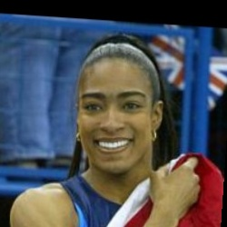
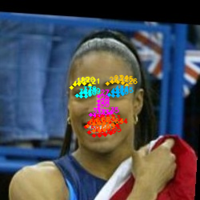
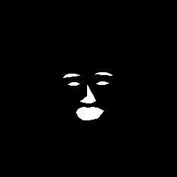
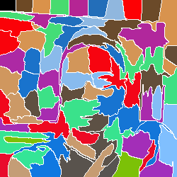
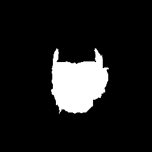
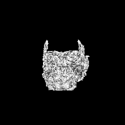
Example: Michelle Collins. Both masked methods passed the v3 sanity check: 20 valid records, serialized B_adv present, L∞ valid after PNG quantization, and mask-outside serialized delta = 0.
1k3d68.onnx has no official semantic point-index mapping; the eyebrow / nose / eye / mouth index ranges are an implementation assumption. Overlay inspection confirms the principal regions visually, but does not turn that ordering into an official mapping.已回答與剩餘問題
真正需要重新跑模型的下一步
只針對同一個 frozen 20-identity protocol，儲存每步 surrogate loss、gradient norm / masked-gradient norm、gradient direction alignment，以及 final mask artifact；不需先產生新的 attack family。這是解釋 Q3 optimization interaction 的最小新增 evidence。
這次 meeting 希望共同決定
- ○ 下一階段應先做 mechanism analysis，還是直接開始改良 Mask？
- ○ PGD+Mask 是否足以作為目前的 Invisible baseline？
- ○ MI-FGSM+Mask 值不值得繼續調整，還是先釐清其 interaction？
- ○ 哪些分析最可能形成我們自己的 contribution？
- ○ 哪些 analysis work 可以分派給組員並維持同一 evaluation contract？
60 秒版本：我們已從 5 個 development identities 擴到 frozen LFW 的 20 個，完成 PGD、MI-FGSM 與各自 Mask 版的統一比較。PGD 的 ArcFace white-box 最強；MI-FGSM 的 FaceNet transfer 最高但可感知失真也最大。Mask 在兩個 attack 都顯著改善感知分數，但降低白盒效果的程度不同。下一步的關鍵不是立即宣稱原因，而是分析 identity、margin、coverage 與 perturbation distribution，找出 Mask × attack interaction 的機制。
從既有 serialized B_adv 解答 Q1–Q5
n=20 paired identities / method；只重新解碼既有 PNG、讀取 formal CSV 和 calibration artifacts。沒有生成或修改任何 adversarial image。
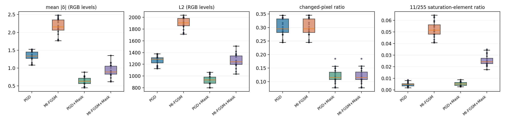
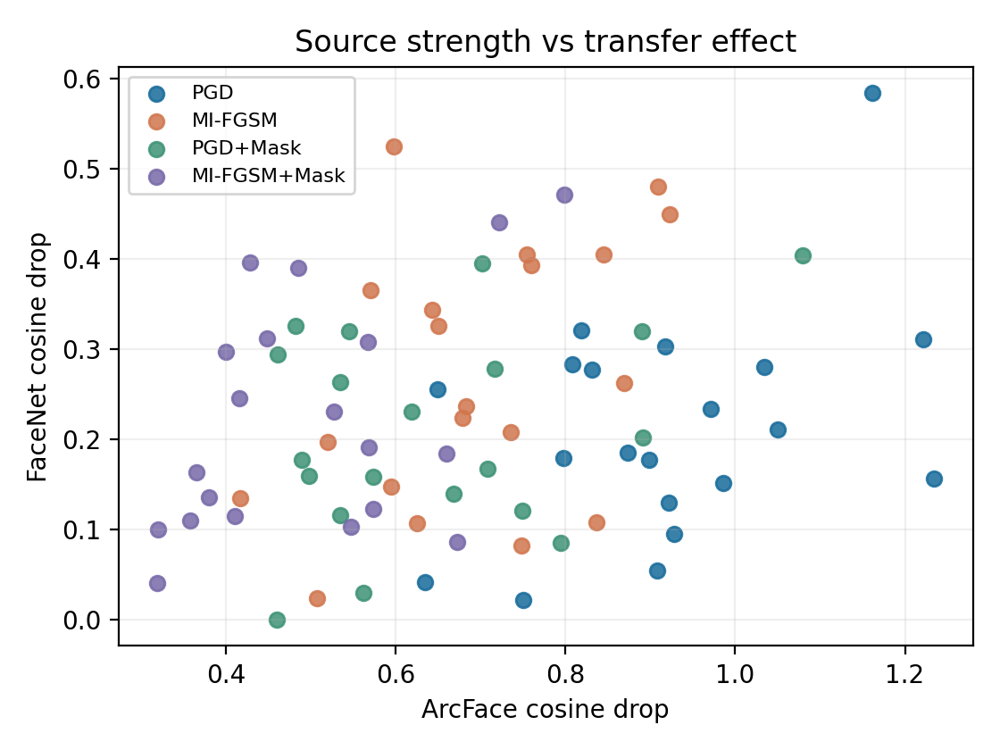
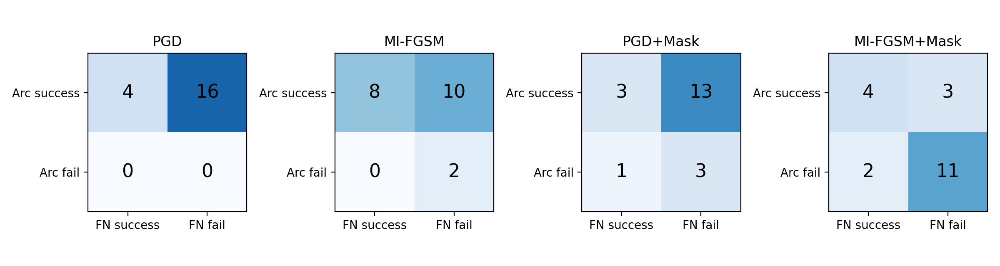
Perturbation distribution（mean / median / SD；RGB-level units except ratios）
| method | L1 | L2 | mean |δ| | changed pixel ratio | 11/255 saturation element ratio |
|---|---|---|---|---|---|
| PGD | 250155.400 / 250734.500 / 26531.619 | 1266.383 / 1285.260 / 76.766 | 1.334 / 1.337 / 0.142 | 0.300 / 0.295 / 0.032 | 0.005 / 0.005 / 0.002 |
| MI-FGSM | 405856.800 / 403569.500 / 41264.684 | 1897.467 / 1906.893 / 97.595 | 2.165 / 2.152 / 0.220 | 0.300 / 0.295 / 0.032 | 0.052 / 0.052 / 0.007 |
| PGD+Mask | 120229.800 / 118791.000 / 21243.280 | 934.059 / 934.636 / 76.663 | 0.641 / 0.634 / 0.113 | 0.121 / 0.116 / 0.026 | 0.005 / 0.005 / 0.002 |
| MI-FGSM+Mask | 173727.150 / 167592.000 / 33714.195 | 1257.839 / 1242.287 / 116.111 | 0.927 / 0.894 / 0.180 | 0.121 / 0.116 / 0.026 | 0.025 / 0.024 / 0.005 |
Definitions: L1=Σ|δ|; L2=√Σδ²; mean |δ|=L1/(HWC); RMS=√mean(δ²); changed-pixel ratio=any RGB channel changed / HW; saturation ratio=|δ|=11 / HWC. All are computed in decoded uint8 RGB, so L∞=11/255 for every observation.
Correlation scope correction. The pooled n=80 correlation mixes four attack-method clusters. The complete per-method n=20 Pearson and Spearman results are in mechanism_analysis.json: within methods, L1/L2/changed-ratio relationships with LPIPS are heterogeneous and often weak, whereas changed ratio versus SSIM remains consistently strong. Therefore the defensible statement is that between-method perturbation amount/distribution and perceptual quality are aligned; it is not an individual-level causal claim.
PGD+Mask persists all final-mask PNGs. MI-FGSM+Mask records the same identity-level deterministic constraint but not its final-mask PNG; therefore its coverage joins use the matching PGD+Mask persisted mask and are labelled as a shared-constraint assumption, not an independent byte-for-byte mask verification.
ArcFace × FaceNet crossing (counts)
| method | Arc success / FN success | Arc success / FN fail | Arc fail / FN success | Arc fail / FN fail |
|---|---|---|---|---|
| PGD | 4 | 16 | 0 | 0 |
| MI-FGSM | 8 | 10 | 0 | 2 |
| PGD+Mask | 3 | 13 | 1 | 3 |
| MI-FGSM+Mask | 4 | 3 | 2 | 11 |
Compact paired comparison
| comparison | all 3 perceptual metrics improve | FaceNet drop increase / same / decrease | FaceNet success→fail / fail→success / success→success / fail→fail |
|---|---|---|---|
| PGD_to_PGD+Mask | 20/20 | 9/0/11 | 1 / 1 / 3 / 15 |
| MI-FGSM_to_MI-FGSM+Mask | 20/20 | 5/0/15 | 2 / 0 / 6 / 12 |
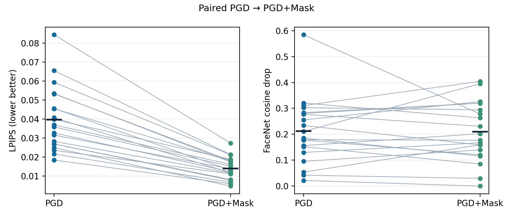
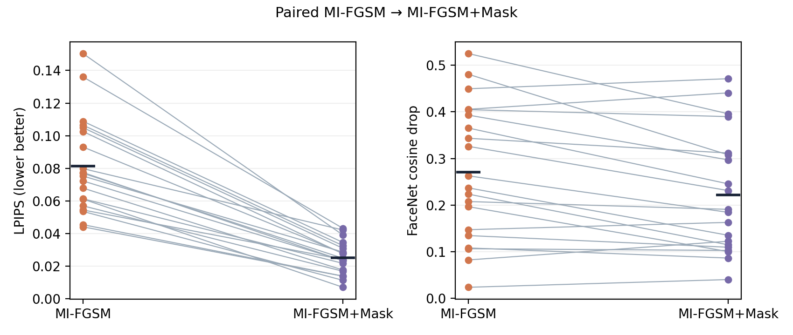
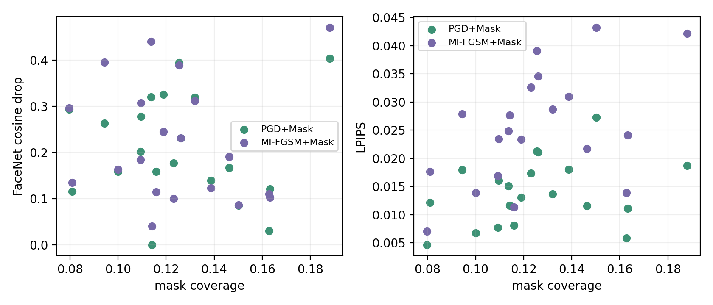
Q1–Q5: evidence bounded conclusions
Q1
Observation. PGD has larger mean ArcFace drop, while MI-FGSM has larger mean FaceNet drop and more FaceNet crossings.
Analysis. Within-method source/transfer correlations are recorded in the derived JSON; they describe association, not causation.
Interpretation. Existing artifacts support only that surrogate strength and transferability are not interchangeable rankings in this fixed n=20 sample.
Limitation. They do not identify a momentum mechanism; gradient alignment or trajectory evidence is required.
Q2
Observation. Both masked variants have substantially lower LPIPS/DISTS and higher SSIM; paired deltas quantify whether their FaceNet drop is retained per identity.
Analysis. The decoded-PNG L1/L2/changed-ratio and mask coverage correlations separate total/spatial perturbation from shared L∞.
Interpretation. Masking redistributes/reduces perturbation under the same peak bound; the observed FaceNet effect is method- and identity-dependent, not proof that a particular facial feature was preserved.
Limitation. Coverage and pixel statistics do not establish feature-level causality.
Q3
Observation. MI-FGSM→MI-FGSM+Mask changes ArcFace ASR from 18/20 to 7/20; 11 pairs go success→fail and none fail→success (exact McNemar p=0.001).
Analysis. Mask coverage is positively associated with ArcFace drop, but has essentially no association with FaceNet drop (pooled Pearson r=-0.028); paired perturbation reductions are documented.
Interpretation. Coverage alone does not explain the MI-FGSM white-box ASR reduction, although the observed effect is large in this development sample.
Limitation. The optimization mechanism remains a Remaining Question: it needs per-step gradients/loss/trajectory or gradient-alignment analysis.
Q4
Observation. MI-FGSM+Mask crossing counts are Arc success/FN success=4, Arc success/FN fail=3, Arc fail/FN success=2, Arc fail/FN fail=11.
Analysis. The matrix and identity list in mechanism_analysis.json directly resolve the 35% versus 30% overlap.
Interpretation. ArcFace success is not a necessary condition for FaceNet success whenever Arc-fail/FN-success cells are nonzero.
Limitation. A 2×2 overlap does not infer cross-model causal direction.
Q5
Observation. Every decoded PNG reaches 11/255 L∞, whereas L1/L2, mean |δ|, changed ratio and saturation ratio differ across methods.
Analysis. Pearson/Spearman tests are reported both pooled (n=80) and within each method (n=20). The latter are heterogeneous, so the pooled pattern is not treated as an individual-level relation.
Interpretation. L∞ controls only the single largest element; between-method perturbation amount/distribution and perceptual quality are aligned, explaining why equal L∞ can look different.
Limitation. The n=20 within-method associations are exploratory and do not establish pixel- or feature-level causality.
Machine-readable derived artifacts and statistics
assets/analysis/mechanism_analysis.json, perturbation_per_identity.csv, mask_coverage_per_identity.csv, and paired_comparisons.csv. Paired continuous outcomes use Shapiro diagnostic plus two-sided Wilcoxon signed-rank; paired ASR uses exact McNemar/binomial on discordant pairs. Interpret p-values as evidence within the fixed development sample, not a population estimate.
報告使用的 authority artifacts
docs/RESEARCH_STATUS.md：研究 scope、calibration thresholds、正式 protocol 與 historical exclusions。docs/EXPERIMENT_PROTOCOL.md：A/B/B_adv unit、attack contract、metric definitions。results/transfer/lfw_attack_dev_20_four_method_v3/{summary.json,unified_summary.csv,per_identity_results.csv}：本報告四方法 × 20 的全部 aggregate numbers、sanity check、raw detail（保留於 raw results，不複製進 report）。docs/reports/meeting_2026_09_30/assets/：本頁實際使用的少量 Mask visualization 副本。
Per-identity raw detail：authority CSV path
results/transfer/lfw_attack_dev_20_four_method_v3/per_identity_results.csv 包含四方法 × 20 identities 的 crossing、cosine、perceptual metrics、actual L∞ 與 mask-outside delta；主頁刻意不堆放原始 80 筆資料。
RESEARCH_STATUS.md 已同步列入 four-method v3，並保留舊 authority entries。Static, read-only meeting snapshot. No attacks, embeddings, calibration, or metric computation are performed by this HTML.